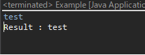

[Java] コンソールからデータを受け取る方法(System.in)
こんにちは。明月です。
この投稿はJavaのコンソール環境でユーザからデータを入力させる方法に関する説明です。
Javaのプログラミングをすると「System.out.println」関数をよく使います。「System.out.println」関数はデータをコンソールに表示する関数です。
Eclipse(IDE)の開発環境では「sysout」だけ入力しても自動変換(Intellisense)機能で自動に変換されます。
逆に「System.in」という関数は無いかと思ったら、逆にコンソールからデータを入力するスキャン関数であります。
public class Example {
public static void main(String[] args) {
try {
// データバッファ
byte[] data = new byte[4096];
// コンソールから入力されるSystem.in.read関数
System.in.read(data, 0, 4096);
// バッファでStringに変換
String buffer = new String(data);
// \0の値を除く。
buffer = buffer.trim();
// 結果出力
System.out.println("Result : " + buffer);
} catch (Throwable e) {
// TODO Auto-generated catch block
e.printStackTrace();
}
}
}

例をみればコンソールから「test」という値を受け取って、出力しました。
上のとおりに作成しても問題ないですが、バッファを設定することが気になります。
import java.util.Scanner;
public class Example {
public static void main(String[] args) {
// リソース概念があるので、管理がしやすい。
// バッファ設定がないのでソースがシンプルになる。
try(Scanner scanner = new Scanner(System.in)) {
// コンソールから値を受取る。
String buffer = scanner.nextLine();
// コンソールに出力する。
System.out.println("Result : " + buffer);
}
}
}
結果は同じですが、コネクションがあるので、リソース管理がしやすいです。(コンソールもIOなので結局リソースです。)
try ~ catchもなくなるし、バッファ設定がないので、コードがシンプルになりました。
ここまでJavaのコンソール環境でユーザからデータを入力させる方法に関する説明でした。
ご不明なところや間違いところがあればコメントしてください。
「Devlopment note / Java」の他投稿
- [Java] 日付フォーマット(SimpleDateFormat)を使う方法2020/03/25 00:36:53
- [Java] サーブレット(Servlet)の環境でファイルアップロード(プログレスバーでファイルアップロード状態を表示する方法)する方法2020/03/24 00:48:21
- [Java] Spring環境でファイルアップロード(プログレスバーでファイルアップロード状態を表示する方法)する方法2020/03/22 23:15:12
- [Java] FTPに接続してファイルをダウンロード、アップロードする方法(FTPClient)2020/03/20 02:44:36
- [Java] JSPのSpring環境でschedulerのcronを使う方法2020/03/18 00:24:32
- [Java] POIを利用してExcelを扱う方法2020/03/17 01:48:00
- [Java] PDFを出力する方法(itextpdf)2020/03/13 00:47:31
- [Java] ログライブラリ(log4j)を使う方法2020/03/12 00:54:39
- [Java] Jsonタイプのデータを使う方法(Gsonライブラリ)2020/03/11 00:30:15
- [Java] Base64をエンコード、デコードする方法2020/03/09 10:24:01
- [Java] cmdコマンドを実行するための方法2020/03/06 18:01:10
- [Java] メール(javax.mail)を発送する方法2020/03/05 20:07:49
- [Java] クラス複製(Clonable, Reflection)2020/03/05 00:03:19
- [Java] シリアライズ(直列化: Serializable)2020/03/03 00:03:33
- [Java] StringBuilderとStringBufferの差異2020/03/02 07:52:22
最新投稿
- [C#] NPOIライブラリを利用してエクセルファイルを生成する方法2020/05/07 01:49:01
- [C#] Geckoライブラリを利用してウェブスクレイピングする方法2020/05/05 00:52:26
- [C#] PDFを作成する方法(iTextSharp)2020/05/03 10:22:40
- [C#] シリアライズ(Serialization)をする方法2020/04/30 19:32:04
- [C#] dynamicタイプの動的パラメータ-DynamicObject(WinFormでASP.MVCのViewBagオブジェクトを使用する方法)2020/04/29 22:41:32
- [C#] Stringの補間式(interpolation)2020/04/27 20:39:57
- [C#] Newtonsoft.JSONライブラリを利用してJsonデータ構造を扱う方法2020/04/23 20:19:53
- [C#] EMailを送信する方法(System.Net.Mail)2020/04/22 19:00:42
- [C#] ini環境ファイルを使う方法2020/04/22 00:09:39
- [C#] 環境設定ファイルを扱う方法(System.Configuration)2020/04/20 19:37:57
- [C#] Reflectionを利用してクラス複製する方法2020/04/17 00:34:33
- [C#] XMLをXPathを利用してデータを取得する方法2020/04/16 00:47:17
- [C#] NSoupライブラリを利用してXMLとHTMLをパーシングする方法2020/04/14 19:34:15
- [C#] 日付フォーマット2020/04/09 20:53:20
- [C#] ログライブラリ(log4net)を設定する方法2020/04/08 13:04:22